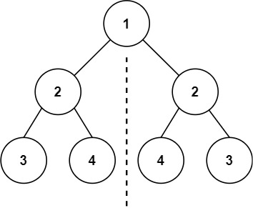
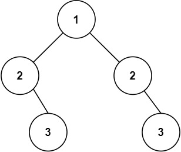

题面
给你一个二叉树的根节点 root ， 检查它是否轴对称。
示例 1：

输入： root = [1,2,2,3,4,4,3]
输出： true示例 2：

输入： root = [1,2,2,null,3,null,3]
输出： false提示：
- 树中节点数目在范围
[1, 1000]内 -100 <= Node.val <= 100
进阶： 你可以运用递归和迭代两种方法解决这个问题吗？
思路
- 同时传入两个节点进行镜像比较，检查外侧对外侧、内侧对内侧是否相等
- 终止条件有两种：
- 都为空：镜像位置都没节点，对称，返回 True
- 一个为空 / 值不等：不对称，返回 False
- 递归调用交叉配对：
recur(left.left, right.right)：外侧对外侧recur(left.right, right.left)：内侧对内侧- 两边都对称才返回 True
- 和翻转二叉树的对比：
翻转二叉树 | 对称二叉树 | |
|---|---|---|
传入参数 | 一个节点 | 两个节点同时比较 |
返回值 | 节点（修改后的树） | 布尔值（是否对称） |
终止条件 | 一种：空→return | 两种：都空→True，一空或值不等→False |
递归配对 |
| 交叉配对： |
有趣的联系：两题都涉及"交叉"——翻转是交叉赋值（left↔right），对称是交叉比较（外侧对外侧，内侧对内侧）。**一棵树是对称的，等价于它和自己的翻转相等**代码实现
class Solution:
def isSymmetric(self, root: Optional[TreeNode]) -> bool:
def recur(left: Optional[TreeNode], right: Optional[TreeNode]):
if not left and not right:
return True
if not left or not right or left.val != right.val:
return False
l_flag = recur(left.left, right.right)
r_flag = recur(left.right, right.left)
return l_flag and r_flag
if not root:
return True
return recur(root.left, root.right)- 复杂度：时间 O(n)，空间 O(n)（递归调用栈）